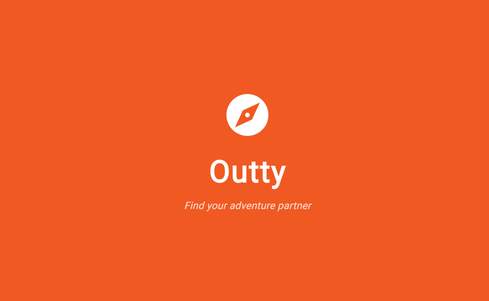

Outty
A web-based dating application designed to connect adventure seekers.
Project Description
As part of an academic software engineering project, Kennedy worked as part of a team to develop Outty, a web-based dating application designed to connect adventure seekers based on their shared interests and preferred activities.
The project involved designing and developing a user-friendly platform that allows users to create profiles, explore potential matches, and connect with others who share similar interests and adventurous lifestyles.
Kennedy was responsible for contributing to the coding, creating the original prototype, and drafting user flow diagrams. Throughout development, the team focused on collaboration and implementing features that aligned with the project's requirements.
This project showcases strong skills in software development, UI/UX design, teamwork, and applying software engineering principles to create a functional web-based application.
My Contributions
- Collaborated with team members throughout the planning, design, and development process.
- Created a functional prototype using Figma.
- Drafted user flow diagrams for account setup and social media profile linking.
- Participated in testing and debugging to improve application functionality.
- Contributed to project documentation and team presentations.
Technologies Used
- Figma
- Jira
- Flutter
- Firebase
- GitHub